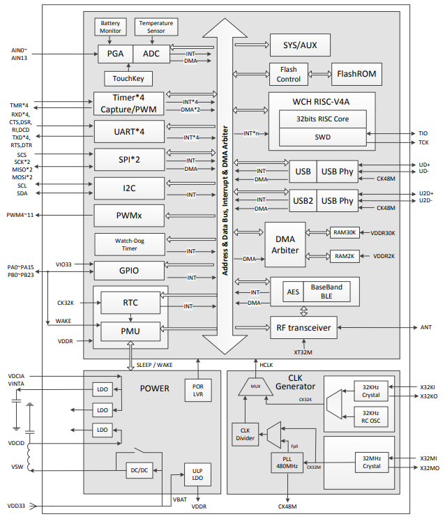

CH583¶
Xin简介¶

规格参数¶
集成 BLE无线通讯的32位 RISC-V4A 微控制器。片上集成2Mbps低功耗蓝牙BLE 通讯模块、2个全速USB主机和设备控制器及收发器、2个SPI、4个串口、ADC、触摸按键检测模块、RTC等丰富的外设资源。
基本参数¶
发布时间：
参考价格：￥4.5
制程工艺：
供货周期：
处理性能：
封装规格：QFN48
运行环境：-40°C to 85°C
RAM容量：32 KB
Flash容量：1 MB
特征参数¶
80 MHz RISC-V4A (青稞V4)
2x USB FS Host/Device
32KB SRAM，1MB Flash，支持ICP、ISP和IAP，支持OTA无线升级
2.4GHz RF收发器和基带及链路控制，支持BLE5.1
支持2Mbps、1Mbps、500Kbps、125Kbps，接收灵敏度-98dBm，可编程+7dBm发送功率
4组UART，2组SPI，12路PWM，1路IIC
内置温度传感器
内置RTC，支持定时和触发两种模式
40个GPIO，其中4个支持5V信号输入
模拟性能¶
TouchKey 12-bit ADC
12-bit ADC (14ch)
14x TouchKey
芯片架构¶
1.56 DMIPS
低功耗两级流水线
功耗参数¶
低功耗产品
支持 3.3V 和 2.5V 电源，CH583M 支持 1.8V
内置 DC-DC 转换，可降低功耗
空闲模式 Idle：1.6mA
暂停模式 Halt：320uA
睡眠模式 Sleep：0.7uA～2.8uA 多档
下电模式 Shutdown：0.2uA～2.3uA 多档

连接能力¶
BLE¶
BLE 5.3 -98dBm +7dBm
接收灵敏度-98dBm，可编程+7dBm发送功率
BLE 符合 Bluetooth Low Energy 5.0规范
USB¶
USB FS OTG
2 组独立的 USB 控制器和收发器
15 个端点，支持 DMA，支持 64 字节数据包
集成 USB 2.0 全速收发器 PHY，无需外围器件支持全/低速的 Host 主机和 Device 设备模式

Xin选择¶
品牌对比¶
对比包括性能和性价比两个维度，基于 BLE 对比的品牌较多，在此重点对比可替换方案和高性价比
32KB/1 MB |
BLE5.3 |
0.7uA |
2/4/2 |
QFN48/QFN28 |
||
407 |
512KB/384KB |
BLE5.0 |
5uA |
0/2/3 |
QFN32/QFN28 |
系列对比¶
wireless |
USB/UART/ETH |
|||||
|---|---|---|---|---|---|---|
≤ 80MHz |
32KB/1 MB |
BLE5.1(104dBm) |
2xOTG/4/X |
0.7-2.8uA |
||
20MHz |
18KB/512KB |
BLE4.2(101dBm) |
OTG/4/X |
0.3-6.0uA |
||
40MHz |
32KB/250KB |
BLE4.2(96dBm) |
OTG/4/10Mbps |
0.3-3.0uA |
版本对比¶

CH582¶
CH582M CH582F ￥3.68
CH582 相比 CH583 少了 SPI1 主机和 512KB 闪存用于存储数据或备份代码，不支持最低 1.7V 电源电压供电。
CH581 则基于 CH582 去掉了一组 USB、触摸按键检测模块、I2C 模块和两个串口，FlashROM总容量仅 256KB，ADC 不支持 DMA。
Hint
零售价格 ￥3.68 和小封装(QFN28)是优势，还包括有两个USB OTG外设（ADC缩水）。
Xin应用¶
开发板¶

智能门锁¶
53GPIO BLE 14x Touch CH583M